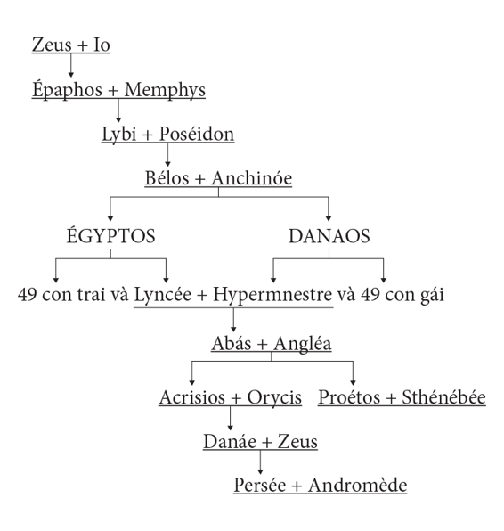

Sau khi chiến thắng oanh liệt tên Phinée cùng với đám thuộc hạ của hắn, Persée ở lại vương quốc của Céphée ít ngày. Mặc dù nhà vua và hoàng hậu có ý định trao quyền thừa kế ngai vàng và cai quản đất nước cho chàng nhưng chàng một mực từ chối. Chàng xin vua cha và hoàng hậu cho phép chàng đưa vợ về cho mẹ và lão ông Dictys.
Ở đảo Sériphe, lợi dụng lúc Persée vắng nhà, tên vua Polydectès ra sức dụ dỗ Danaé lấy hắn. Mặc cho hắn tuôn ra những lời đường mật, những lời hứa hẹn một tấc đến trời, Danaé vẫn không biểu lộ một chút thiện cảm nào với hắn. Sau nhiều ngày dụ dỗ, thuyết phục không được, hắn xoay ra dùng thủ đoạn cưỡng bức, mưu dùng đám tay sai bất lương bắt cóc Danaé về chung sống với hắn. May thay được một gia nhân tâm phúc báo cho biết, Danaé trốn ra khỏi cung điện và vào trú ngụ trong một ngôi đền thờ. Ở Hy Lạp xưa kia có tục lệ nếu ai đã vào phủ phục dưới chân bàn thờ thần của một ngôi đền, cầu xin các vị thần che chở, bảo hộ thì không một kẻ nào, dù kẻ đó có quyền cao chức trọng đến mấy đi nữa, cũng không được xâm phạm đến tính mạng của người cầu xin. Đây là một tục lệ thiêng liêng có từ bao đời trước, được nhân dân tôn thờ, gìn giữ và bảo vệ cho nên Polydectès không dám coi thường, không dám vi phạm. Nhưng hắn cho lũ thuộc hạ đầu trâu mặt ngựa bao vây ở ngoài ngôi đền, rình mò cơ hội Danaé sơ hở là bắt cóc đem về.
Persée về đến Sériphe trong tình hình như thế. Chàng vào cung điện tìm mẹ song không thấy. Được một người kể cho rõ tình hình chàng chạy ngay đến cung vua. Lúc này Polydectès đang chè chén với lũ quần thần. Bọn chúng không tên nào nghĩ rằng lại có ngày, Persée trở về, vì chúng không thể tin được rằng cái anh chàng tuổi trẻ dũng khí có thừa nhưng tay không một thứ vũ khí gì thần diệu lại có thể chiến thắng được lũ ác quỷ có bao phép lạ. Thấy Persée trở về, cả bàn tiệc từ nhà vua cho đến lũ quần thần đều sửng sốt. Persée kính cẩn cúi chào nhà vua rồi nói:
- Muôn tâu bệ hạ! Kẻ hạ thần này đã thực hiện được lòng mong muốn của bệ hạ: diệt trừ được ác quỷ Gorgone, xóa bỏ được một tai họa cho đời sống dân lành.
Nói xong chàng cho tay vào chiếc túi thần lôi chiếc đầu của con quỷ Méduse ra, giơ ra trước mặt mọi người cho họ xem. Và mọi người đã trông thấy rõ đầu con quỷ Méduse. Đó là lần đầu tiên trong đời họ trông thấy đầu một con quỷ ghê sợ đến như thế nhưng cũng lại là lần cuối cùng. Loáng một cái thôi không một tiếng động mạnh nào làm chói tai ai. Gió vẫn thổi, mây vẫn bay, trời vẫn nắng, chim chóc vẫn ca hót song tên vua Polydectès và lũ quần thần thì đã biến thành vật vô tri vô giác, câm tịt, câm như một hòn đá rồi.
Persée đến ngôi đền thờ đón mẹ về. Lũ thuộc hạ của Polydectès bao vây quanh ngôi đền thờ thấy Persée đến thì không còn hồn vua nào cả. Đứa thì bỏ chạy, đứa thì bị Persée kết liễu bằng một nhát gươm, đứa thì phủ phục giập đầu lạy xin tha tội. Persée đón mẹ về cung điện. Chàng không quên đón lão ông và lão bà Dictys tới cùng hưởng niềm vui của ngày hàn huyên đoàn tụ của mẹ con chàng. Mọi việc trở lại ổn định và yên lành. Cuộc sống của những người lương thiện qua cơn sóng gió lại sum họp với nhau rất đầm ấm. Lão ông Dictys lên làm vua thay Polydectès. Danaé bấy giờ đã có tuổi. Bà rất vừa lòng về nàng dâu của bà: vừa nết na hiếu thảo lại vừa xinh đẹp. Bà thầm cảm ơn Số mệnh và thần thánh đã ban cho con trai bà niềm hạnh phúc hiếm có như vậy.
Persée sau khi công thành danh toại, gia thất yên bề bèn ngỏ ý với mẹ trở về thăm quê hương Argos. Chim tìm tổ người tìm tông, điều đó chẳng có gì lạ, mặc dù cảnh ngộ của họ xưa kia lúc rời quê hương có chuyện chẳng vui trong lòng. Nhưng cũng chính vì thế mà họ lại càng khao khát trở về thăm lại nơi chôn nhau cắt rốn xưa kia. Danaé đã nuôi ý định ấy từ lâu trong lòng. Nay thấy con bày tỏ nguyện vọng trúng ý mình bà vô cùng mừng rỡ. Thế là ba mẹ con lên đường trở về Argos.
Trước khi lên đường về thăm đất Argos, Persée trao trả lại cho các vị thần những vũ khí kỳ diệu, những vũ khí đã giúp chàng lập được những chiến công ích nước lợi dân. Chàng trả thanh gươm dài và cong cho vị thần Hermès, đôi dép có cánh và chiếc đẫy thần cho các tiên nữ Nymphe phương Bắc, chiếc mũ tàng hình cho vị thần Hadès. Còn đầu ác quỷ Méduse chàng hiến dâng cho nữ thần Athéna. Nữ thần Athéna đã lấy đầu ác quỷ đem gắn lên tấm áo giáp của mình. Có người nói, nữ thần gắn vào chiếc khiên đồng sáng như ánh mặt trời mặt trăng chứ không phải gắn vào áo giáp hộ tâm.
Tin Persée về Argos làm ông chàng, nhà vua Acrisios, vô cùng lo ngại. Lời sấm truyền như còn văng vẳng bên tai. “Biết đâu chuyến này Persée về là để giết mình”. nhà vua già nghĩ thế. Ông lặng lẽ rời bỏ vương triều của mình trốn sang trú ngụ ở xứ Larissa, một địa phương ở đất Thessalie rất xa Argos. Persée về không gặp được ông, Danaé không gặp được bố, triều đình không người cầm đầu cai quản, Persée bèn lên làm vua, thay ông kế vị.
Bữa kia nhà vua xứ Larissa tên là Teutamidès mở hội để tưởng nhớ tới người cha già quá cố năm xưa. Hội lễ khá to và thu hút đông đảo thanh niên trai tráng các vùng xung quanh tới dự. Vì người Hy Lạp xưa kia vốn ưa chuộng thể dục thể thao võ nghệ cho nên mỗi dịp mở hội là mỗi dịp để thanh niên trai tráng thi đấu đua tài đua sức nhằm giành lấy những phần thưởng vinh quang. Biết tin ấy, Persée chuẩn bị lên đường. Làm sao mà chàng có thể bỏ qua được một dịp thi đấu để chứng tỏ tài năng và sức mạnh của một người anh hùng, con của đấng phụ vương Zeus.
Cuộc thi đấu diễn ra sôi nổi từ sáng sớm, Persée thi ném đĩa. Tiếng loa xướng danh các đấu thủ vang lên. Đến lượt chàng, Persée chạy ra giữa thao trường, cầm đĩa, cong người, vặn mình lấy đà. Dưới ánh mặt trời thân hình cân đối gân guốc của chàng nổi lên loang loáng như một pho tượng bằng đồng bóng nhẫy. Vút một cái! Chàng ném đĩa đi. Chiếc đĩa vừa bay ra khỏi tay chàng, liệng trên không, đã làm mọi người xem trầm trồ đoán chắc phần thắng về tay chàng. Nhưng kìa, sao không thấy loa truyền kết quả, mà lại thấy đám người xem tản ra rồi xúm xít lại một chỗ. Ôi, thật trên đời này ai học được chữ ngờ! Chiếc đĩa của Persée ném bay đi quá xa và rơi vào đầu một người xem làm ông ta chết ngay, chết ngay tại chỗ không nói được câu nào. Đó chính là ông của Persée, nhà vua Acrisios.
Đau xót về chuyện không may đó mà chính mình là tội phạm, Persée chỉ còn cách tổ chức lễ tang rất trọng thể để bày tỏ tấm lòng thành kính và hối hận đối với người ông xấu số. Chàng không dám trở về đất Argos nhìn lại mảnh đất quê hương thân yêu va tiếp tục sự nghiệp của ông mình nữa. Nhưng chàng trao đổi vương quốc của mình lấy vương quốc của Mégapenthès, một người chú của chàng. Mégapenthès là con của Proétos trị vì ở xứ Tirynthe. Và thế là từ đó Mégapenthès trị vì ở xứ Argos, còn Persée ở Tirynthe. Con cháu của hai người này nối đời kế nghiệp, dựng xây đất nước mỗi ngày một tươi đẹp hùng cường, trong số những con cháu của Persée thì người nổi danh hơn cả, vinh quang chiến công lẫy lừng khắp năm châu bốn biển là chàng Héraclès mà người La Mã gọi là Hercules. Chàng là con của thần Zeus vĩ đại và người thiếu nữ trần tục Alcmène xinh đẹp.
Gia hệ người anh hùng Persée
